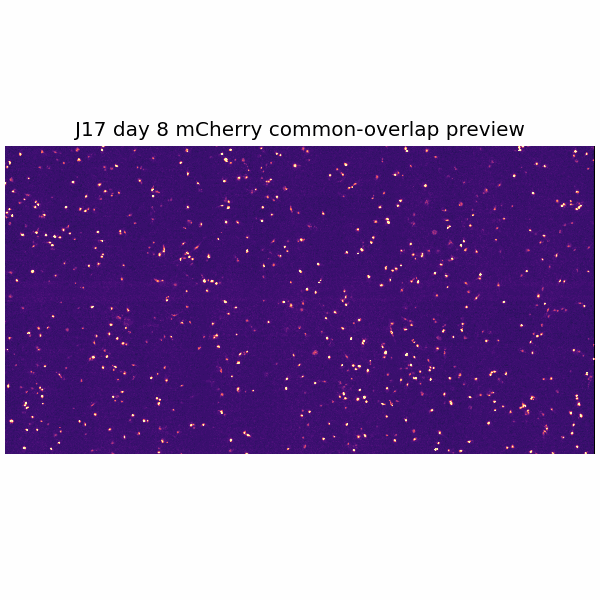
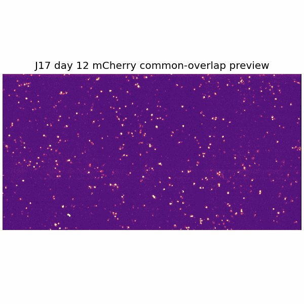
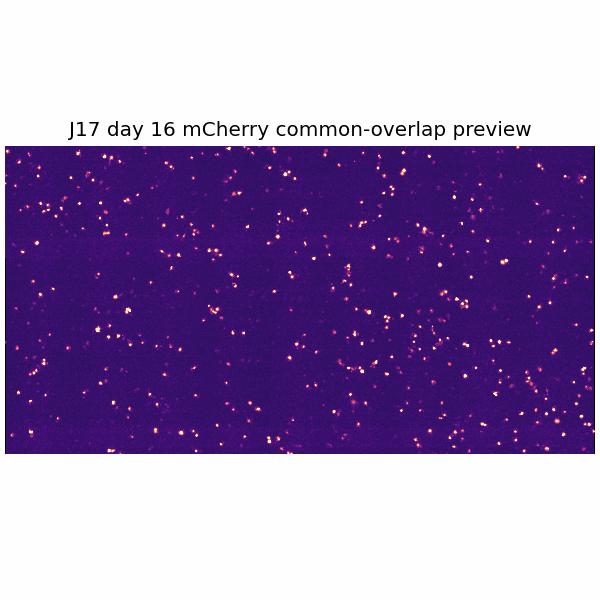
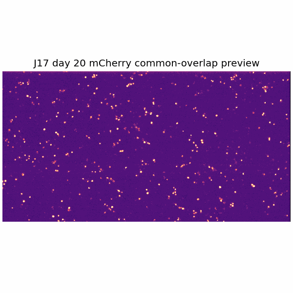
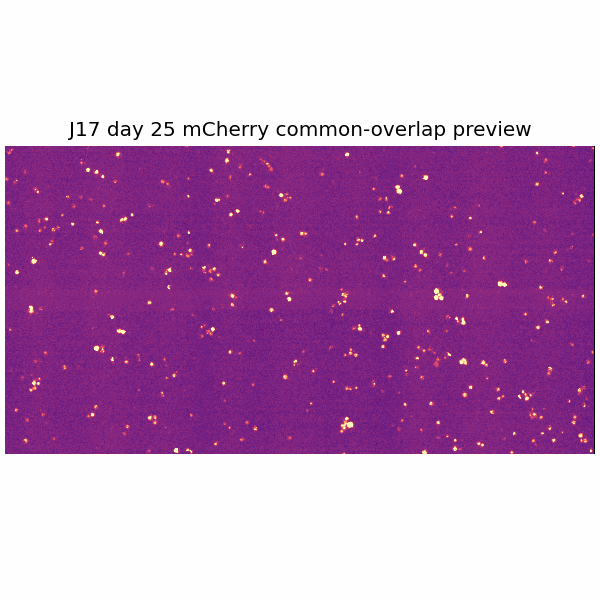
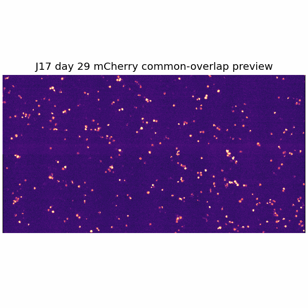
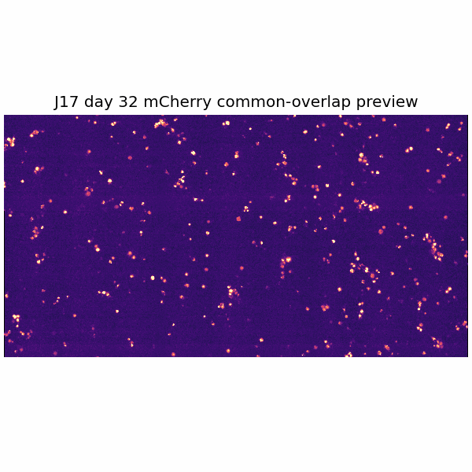
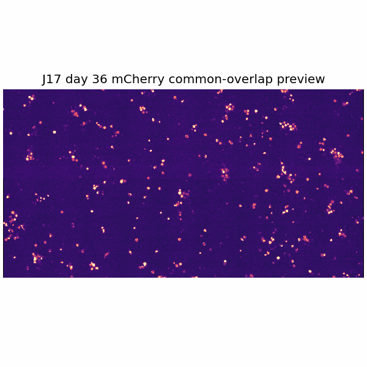
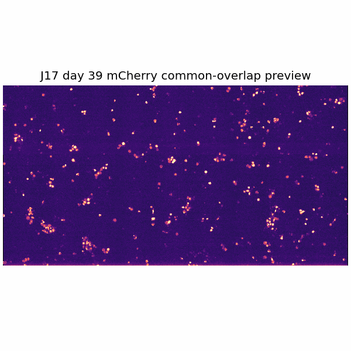
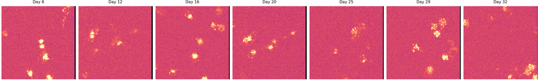

This is a first-pass technical review viewer. Alignment and ROI identity must be reviewed before biological interpretation.
Well
J17
Condition
PLD3_TMEM106B_mCherry_primary
Days included
8|12|16|20|25|29|32|36|39
Included pass days
8, 12, 16, 20, 25, 29, 32
Review-only days
36, 39
Excluded days
none
Overlap retained
52.4% (2868 x 1502 px from 2868 x 2868 px)
QC status
overlap_available
Alignment QC category
manual_alignment_needed
Warning labels
none
Recommended use
manual_alignment_needed
Manual offset review
yes
Pseudo-FOV review
not flagged
Well-Level Overlay / Time-Lapse Viewer
Alignment uncertain: review before interpretation. Manual alignment or pseudo-FOV alignment may be needed.
Overlap-only/common-overlap time-series preview - preferred for analysis. The controls switch days inside the same aligned frame, like a lightweight movie viewer. Full registered context is retained separately and may include edge artifacts.
Day 8









Show all days as montage
Day 8Day 12Day 16Day 20Day 25Day 29Day 32Day 36Day 39
Alignment QC
iNeurons should not move much over 1-2 day intervals. Poor overlays suggest imaging-session field shifts, weak reference signal, focus differences, or failed registration. DAPI/reference signal can be low SNR; a stable nuclear/morphology/reference channel is preferred, and changing phenotype channels should not be the main registration anchor. Bad alignment is shown here so it can be reviewed rather than hidden.
Day
dy
dx
|shift| px
Overlap fraction
Large shift
Old threshold exceeded
Registration channel
QC note
8
0.0
0.0
0.0
1.000
no
no
488nm Binned
reference_timepoint
12
258.1
0.0
258.1
0.910
no
no
488nm Binned
phase_cross_correlation_on_stable_channel
16
-212.3
0.0
212.3
0.926
no
no
488nm Binned
phase_cross_correlation_on_stable_channel
20
263.0
0.0
263.0
0.908
no
no
488nm Binned
phase_cross_correlation_on_stable_channel
25
39.9
0.0
39.9
0.986
no
no
488nm Binned
phase_cross_correlation_on_stable_channel
29
-6.5
0.0
6.5
0.998
no
no
488nm Binned
phase_cross_correlation_on_stable_channel
32
-162.4
0.0
162.4
0.943
no
no
488nm Binned
phase_cross_correlation_on_stable_channel
36
-969.7
0.0
969.7
0.662
yes
no
488nm Binned
phase_cross_correlation_on_stable_channel
39
-1102.3
0.0
1102.3
0.616
yes
no
488nm Binned
phase_cross_correlation_on_stable_channel
Neuron / ROI Candidate Viewers
Each card is a separate neuron/ROI candidate. Manual identity status remains preliminary until reviewed.
ROI001
J17_ROI001
PLD3_TMEM106B_mCherry_primary
Inherited from parent well: check the well-level alignment warning before interpreting this ROI.

ROI montage fallback: per-day ROI frame PNGs were not found in the dashboard-safe assets, so this card does not fake a video.
Overlap-only views remove non-shared edge regions across days to reduce cells popping in/out due to field-of-view drift. Full registered views are retained for context but should be interpreted cautiously.
Full registered context
Large microscopy file stored locally/shared drive
Overlap-only analysis stack
Large microscopy file stored locally/shared drive
Large-shift days
2
ROI/metrics source
registered_common_overlap
ROI Readiness
2 large-shift days. Neuron ROI crops have not been generated yet.
Overlap-only views remove non-shared edge regions across days to reduce cells popping in/out due to field-of-view drift. Full registered views are retained for context but should be interpreted cautiously.